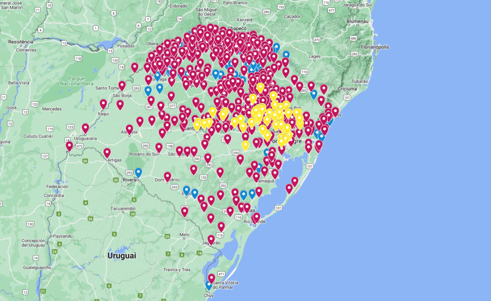

Abaixo tem dados coletados das tragedias feito no dia 01/06/2024 para
entender melhor o quao grave.
- Municípios afetados: 475
- Pessoas em abrigos: 37.812
- Desalojados: 580.111
- Afetados: 2.390.556
- Feridos: 806
- Desaparecidos: 43
- Óbitos confirmados: 171
- Óbitos em investigação: 0
- Pessoas resgatadas: 77.865
- Animais resgatados: 12.543
-
Situações das empresas
-
Você não deveria ver isso
-
Boa parte de empresas grandes e pequenas foram afetadas nessa
tragédia porem a a lei 14.437 foi criada com o objetivo de garantir
que as empresas conseguissem continuar funcionando durante os
momentos de isolamento, com a flexibilização de algumas normas
trabalhistas. Assim, como estabelecido nas enchentes de 2024, no
qual foi decretada situação de calamidade pública no estado do Rio
Grande do Sul. Como por exemplo, ela determina a possibilidade de
teletrabalho e a antecipação de férias individuais e concessão de
férias coletivas, entre outras flexibilizações. Em suma, o Governo
Federal instituiu o Programa Emergencial de Manutenção do Emprego e
Renda. A partir disso, as organizações podem conter temporariamente
os contratos de trabalho, com a distribuição do BEM (Benefício
Emergencial), que deve ser pago mensalmente aos trabalhadores
atingidos como compensação. A exemplo disso, na cidade de Bom
Princípio (RS), há isenção de IPTU para locais afetados. Já na
grande metrópole de Porto Alegre, houve adiamento do pagamento de
parcelas do IPTU ( Imposto Predial e Territorial Urbano).
-
Impacto ambiental e necessidade de prevenção
-
Você não deveria ver isso
-
Além das perdas humanas e dos prejuízos econômicos, as enchentes
deixam um rastro significativo de danos ambientais. Rios e córregos
são contaminados por resíduos e produtos químicos, a vegetação é
destruída e o acúmulo de lixo facilita a proliferação de doenças.
Esses impactos não desaparecem com a baixa das águas — eles
continuam afetando a saúde e a qualidade de vida da população.
Diante desse cenário, investir em ações preventivas torna-se
essencial. Medidas como a limpeza regular de bueiros e rios, a
criação de sistemas de alerta eficientes e o planejamento urbano
adequado podem reduzir consideravelmente os danos de futuras
enchentes. Mais do que uma resposta emergencial, é preciso
fortalecer a consciência coletiva para que comunidades e autoridades
trabalhem juntas na construção de cidades mais seguras e
resilientes.
